China Employee Termination: Decision-Lens Stack Brief for Foreign Employers (Hourly Testing Run)
Key takeaways
- Foreign employers should evaluate each China termination case through stacked decision lenses, not a single legal yes/no test.
- A route that is legally arguable can still fail under evidence, communication, or settlement lenses.
- Pulse-style lens stacking helps non-China executives prioritize the right questions in minutes.
- Legal depth should support, not dominate, front-line decision quality.
- Best results come from synchronized HR-legal-payroll controls with explicit escalation ownership.
Pulse lead
This run rotates to a decision-lens stack format. Instead of treating termination as one binary decision, it breaks the case into layered lenses that leadership can review quickly: legal lens, evidence lens, communication lens, settlement lens, and execution lens. For foreign clients, this is easier to run in real teams because each lens has clear owners and pass/fail triggers.
Plain-language legal context first
China’s Labor Contract Law defines route boundaries and severance obligations. State Council implementation regulations and SPC interpretation shape how disputes assess procedural fairness, documentary reliability, and consistency across actions. For foreign employers, the practical translation is straightforward: route legality must remain coherent with evidence, manager communications, and payout execution from beginning to closure.
If any lens fails, overall case defensibility weakens.
Decision-lens stack (how to triage fast)
Lens 1: Legal route lens
Question: Is the selected route available for the specific fact pattern?
Pass condition: route prerequisites are explicit, documented, and owned.
Fail signal: route label selected but factual preconditions remain vague.
Lens 2: Evidence lens
Question: Can the case narrative be supported chronologically and consistently?
Pass condition: owner-verified chronology index and gap register completed.
Fail signal: key records conflict or unresolved gaps remain near execution.
Lens 3: Communication lens
Question: Are HR and manager messages aligned with route logic and evidence boundaries?
Pass condition: one script version, one briefing checkpoint, one controlled meeting record.
Fail signal: script drift or ad-lib statements likely.
Lens 4: Settlement lens
Question: Are payout components and explanations clear, itemized, and stable?
Pass condition: legal/payroll co-signed worksheet and explanation pack.
Fail signal: ambiguous component mapping or timing uncertainty.
Lens 5: Execution lens
Question: Can the team complete payment, records, and closure evidence without drift?
Pass condition: closure gate requires signature + payment proof + archive completeness.
Fail signal: “signed = closed” behavior before operational completion.
Lens 6: Escalation lens
Question: Who can pause, reroute, or approve when late risk appears?
Pass condition: named primary/backup authority and fallback route logic.
Fail signal: decision authority unclear during time pressure.
Practical implications for foreign employers
- HQ/board: review lens status instead of route-only summaries.
- Regional HR: convert each lens into go/no-go gate with owner and SLA.
- Payroll/finance: co-own Lens 4 and Lens 5 outcomes.
- Managers: treat Lens 3 script discipline as compliance behavior, not preference.
Scenario snapshots
Scenario A: Legal lens passed, evidence lens failed
Route looked viable, but chronology validation surfaced contradictions. Team paused and remediated evidence before proceeding. Outcome: slower action, stronger defensibility.
Scenario B: Communication lens failed late
Manager improvised in pre-meeting prep, creating narrative drift. Team reset script governance and issued corrected briefing. Outcome: controlled execution restored.
Scenario C: Settlement lens prevented reopen
Itemization was unclear before commitment. Payroll/legal co-signed revised worksheet and explanation note first. Outcome: fewer post-signature disputes.
Daily operations SOP (lens-driven)
- Open case and run baseline across all six lenses.
- Mark each lens green/amber/red with owner and due date.
- Resolve red lenses before employee-facing actions.
- Run legal + payroll parallel check for settlement/execution lenses.
- Execute with live exception logging and change control.
- Close only when execution and escalation lenses pass final gate.
- Review weekly lens-failure trends to improve controls.
Required document checklist
- Route memo + prerequisites table
- Evidence chronology index + gap register
- Communication script pack + briefing proof
- Settlement worksheet + tax note
- Escalation authority matrix
- Lens status sheet with owners
- Meeting/exception records
- Payment proof + reconciliation package
- Closure audit report
Exception handling playbook
- Red lens unresolved at cutoff: automatic hold and escalation.
- Route/evidence change detected: rerun legal and evidence lenses.
- Script drift event: corrected written summary + legal review note.
- Settlement change after approval: relock worksheet and rerun Lens 4-5.
- Authority unavailable: activate backup owner before next step.
System implementation notes
Add fields:
- lens ID/status (1-6)
- owner, SLA, and evidence links
- script version and acknowledgment timestamp
- settlement lock version + payroll verifier
- escalation decision log
- closure completeness score
Control rules:
- hard stop on unresolved red lenses
- mandatory re-approval on route/script/settlement changes
- immutable logs for lens transitions and approvals
- weekly dashboard of repeat red-lens patterns
Common mistakes and prevention
- Mistake: route-only approval.
Prevention: mandatory six-lens review.
- Mistake: late payroll involvement.
Prevention: parallel review for settlement/execution lenses.
- Mistake: weak escalation ownership.
Prevention: named primary/backup authority at intake.
- Mistake: closure on signature only.
Prevention: enforce execution lens end-state requirements.
What to do now
- Deploy a one-page six-lens template for active cases.
- Define red-lens criteria that force auto-hold.
- Train managers on communication lens controls.
- Require settlement worksheet co-sign before commitment.
- Build weekly lens-failure dashboard by entity/city.
- Recalibrate lens thresholds quarterly with local counsel.
What to watch next
- Continued scrutiny of process coherence and evidence quality.
- Ongoing sensitivity around payout explanation and closure proof.
- Local practice variance requiring periodic lens recalibration.
FAQ
Is lens stacking legally required?
No. It is an operations governance model to improve decision and execution quality.
Can smaller teams use it?
Yes. Start with four lenses (legal, evidence, communication, settlement) and expand.
Why is this better for foreign leadership?
It turns legal complexity into clear, owner-based operational checks.
Is negotiated separation always safer?
Often lower friction, but still vulnerable if evidence/settlement lenses fail.
When should external PRC counsel be mandatory?
High-risk unilateral routes, protected-status concerns, restructuring, and multi-city complexity.
Legal depth appendix
This brief is anchored in the PRC Labor Contract Law, State Council implementation regulations, and SPC labor-dispute interpretation. Combined, they indicate that legality, fairness, and documentary reliability are evaluated together. For foreign employers, sustained coherence across lenses is the practical requirement.
Disclaimer
This content is informational only and does not constitute legal, tax, or employment advice. Seek qualified PRC legal and tax advice for specific matters.
Sources
- National People’s Congress — Labor Contract Law of the PRC (English), 2007-12-13: http://www.npc.gov.cn/zgrdw/englishnpc/Law/2007-12/13/content_1384064.htm
- State Council — Implementation Regulations of the Labor Contract Law (Decree No. 535), 2008-09-18: https://www.gov.cn/gongbao/content/2008/content_1124615.htm
- Supreme People’s Court — Interpretation on Labor Dispute Application Issues (Fa Shi [2020] No. 26), 2020-12-29: https://www.court.gov.cn/fabu/xiangqing/243981.html
- China Briefing / Dezan Shira — Employee Termination in China, 2025-10-17: https://www.china-briefing.com/news/employee-termination-in-china/
- Littler — Key Recent Developments in China’s Employment Law, 2024-03-20: https://www.littler.com/news-analysis/asap/key-recent-developments-chinas-employment-law-china-us-comparative-perspective
- PwC Worldwide Tax Summaries — PRC Individual Taxes on Personal Income, 2025-01-15: https://taxsummaries.pwc.com/peoples-republic-of-china/individual/taxes-on-personal-income
Need local employment support in China?
If you need a compliance-first partner for hiring, payroll, and risk controls in China, China-Payroll.com can help evaluate the right setup.
Image Prompt Pack
Create a 16:9 hero image for article title: 'China Employee Termination: Decision-Lens Stack Brief for Foreign Employers (Hourly Testing Run)'. Scene: global operations team evaluating workforce model options for China market entry. Include motifs: decision ma…